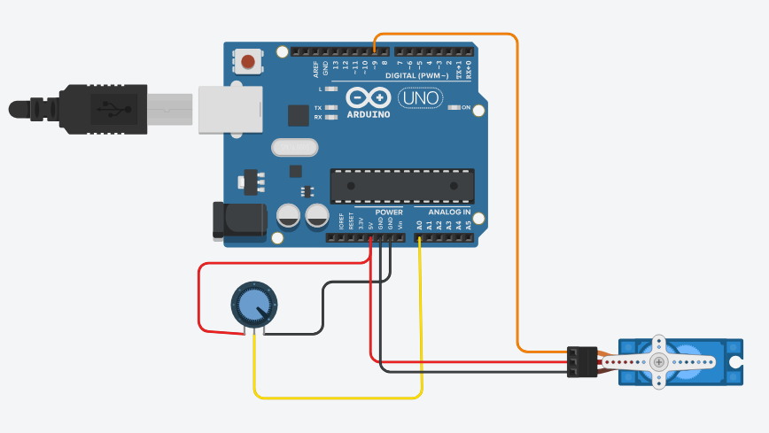

Controle de Servo Motor

Objetivo
Aprender a controlar a posição de um servo motor usando Arduino, permitindo movimentos precisos em um ângulo específico, ideal para projetos de robótica e automação.
Materiais Necessários
- Arduino Uno (ou similar) - 1 unidade
- Servo motor (pequeno, tipo SG90) - 1 unidade
- Potenciômetro 10kΩ - 1 unidade
- Jumpers - Alguns
- Protoboard - 1 unidade
- Cabo USB - 1 unidade
Passo a Passo da Montagem
Esquema das ligações:
Servo Motor:
- Fio Vermelho (alimentação) → 5V do Arduino
- Fio Marrom ou Preto (GND) → GND do Arduino
- Fio Laranja ou Amarelo (sinal) → Pino digital 9 do Arduino
Potenciômetro:
- Terminal 1 → 5V
- Terminal 2 (central) → Pino analógico A0
- Terminal 3 → GND
Código
#include // Inclui a biblioteca para controle do servo
Servo meuServo; // Cria um objeto servo para controlar o servo motor
int potPin = A0; // Pino analógico conectado ao potenciômetro
int valorPot; // Variável para armazenar o valor do potenciômetro
int angulo; // Variável para armazenar o ângulo do servo
void setup() {
meuServo.attach(9); // Conecta o servo ao pino 9
Serial.begin(9600); // Inicia a comunicação serial
}
void loop() {
valorPot = analogRead(potPin); // Lê o valor do potenciômetro (0-1023)
angulo = map(valorPot, 0, 1023, 0, 180); // Converte para ângulo (0-180)
meuServo.write(angulo); // Define a posição do servo
// Exibe informações no monitor serial
Serial.print("Valor do potenciômetro: ");
Serial.print(valorPot);
Serial.print(" | Ângulo: ");
Serial.println(angulo);
delay(15); // Pequena pausa para o servo se mover
}
Explicação do Funcionamento
Este projeto demonstra como controlar um servo motor:
- O servo motor é um tipo de motor que pode ser posicionado em um ângulo específico (geralmente entre 0° e 180°).
- O potenciômetro funciona como um controle manual para ajustar a posição do servo.
- Ao girar o potenciômetro, o Arduino lê o valor analógico (0-1023) e o converte para um ângulo (0-180).
- O servo se move para a posição correspondente ao ângulo calculado.
- O monitor serial exibe o valor do potenciômetro e o ângulo correspondente para facilitar a visualização.
Exemplo de funcionamento:
- Potenciômetro totalmente para a esquerda: servo a 0° (posição inicial)
- Potenciômetro no meio: servo a 90° (posição central)
- Potenciômetro totalmente para a direita: servo a 180° (posição final)
Vídeo Demonstrativo
Dicas e Variações
Considerações importantes para este projeto:
- Alguns servos podem precisar de uma fonte de alimentação externa, especialmente se você estiver usando mais de um servo.
- Você pode substituir o potenciômetro por outros sensores, como um sensor de luz (LDR) ou um sensor de distância.
- Para projetos mais avançados, experimente controlar o servo com botões para movê-lo em incrementos específicos.
- Você pode criar uma sequência programada de movimentos para o servo, útil em projetos de robótica.
- Tenha cuidado com os limites físicos do seu servo específico, alguns podem ter um alcance menor que 0-180°.